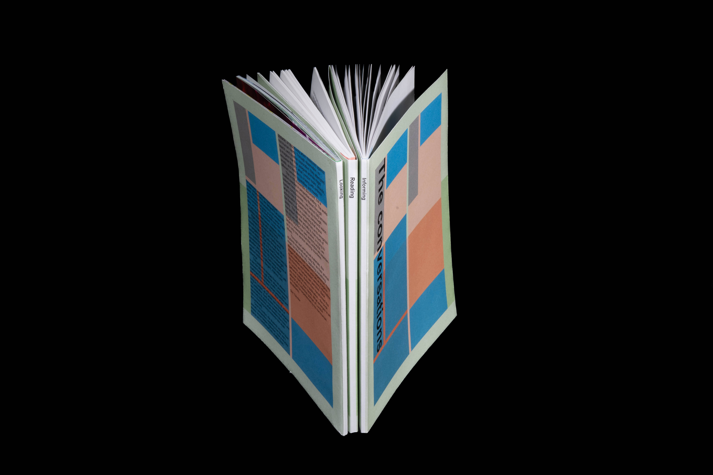
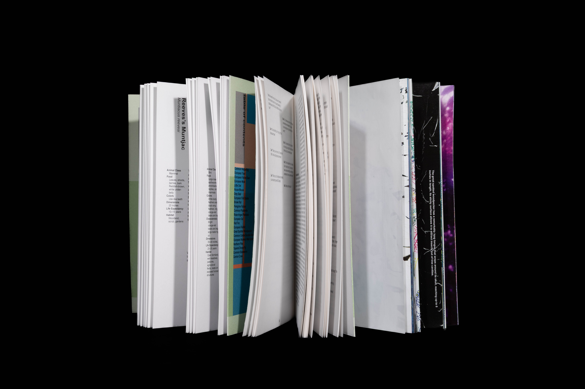

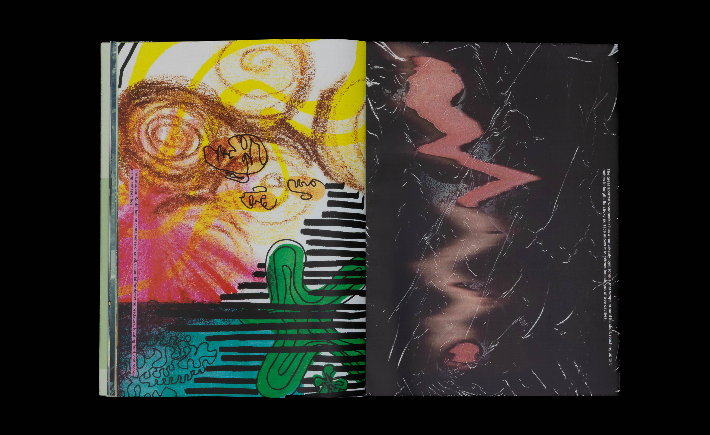
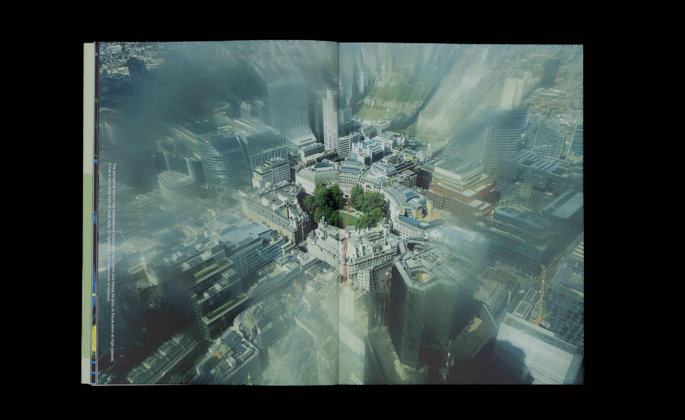
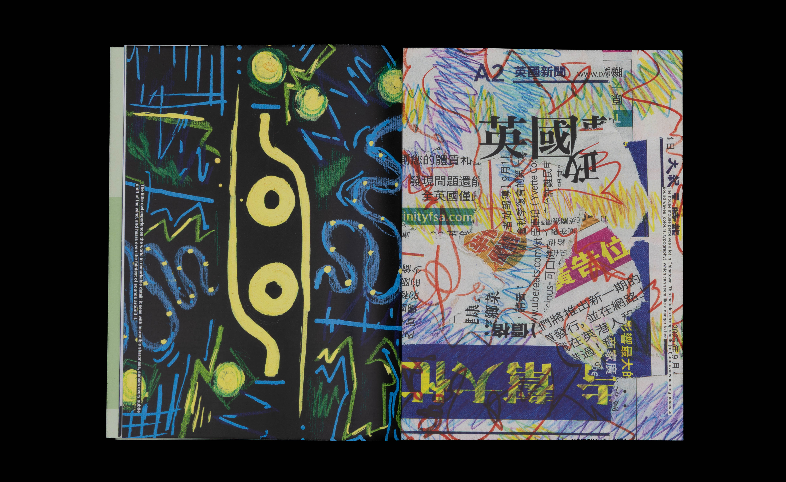
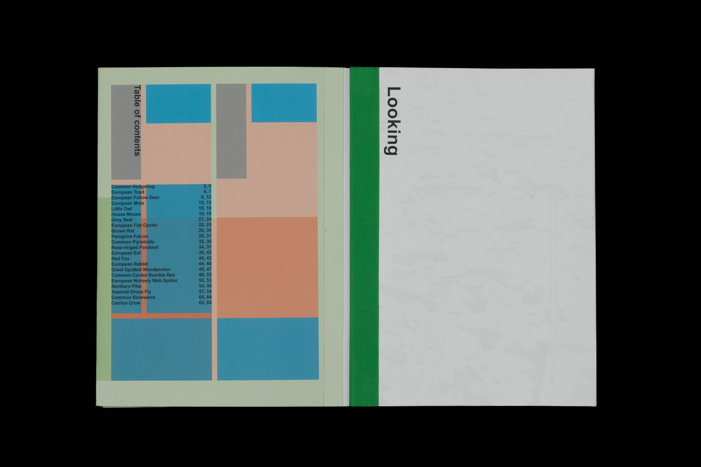
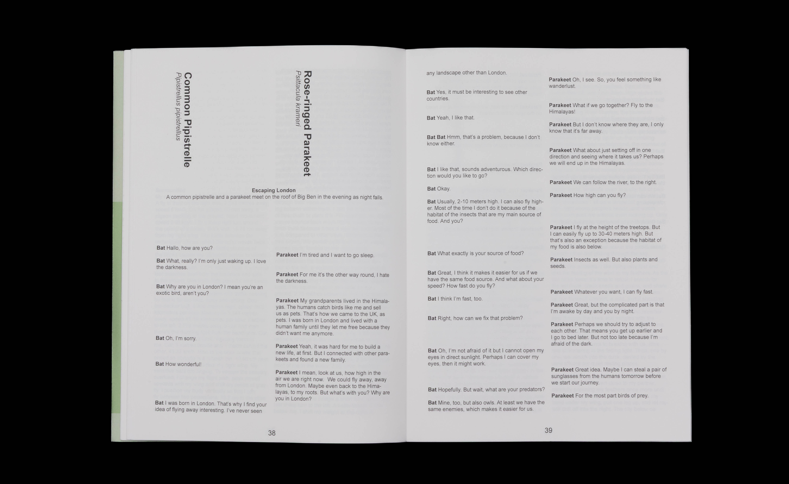

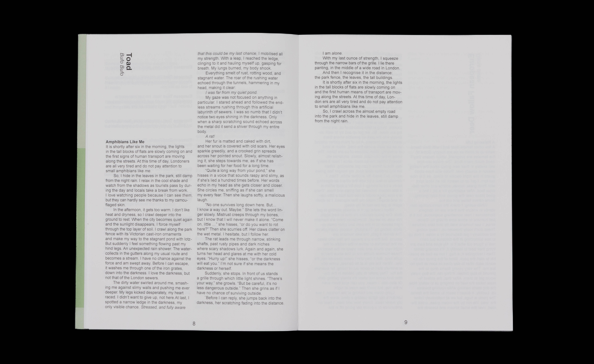
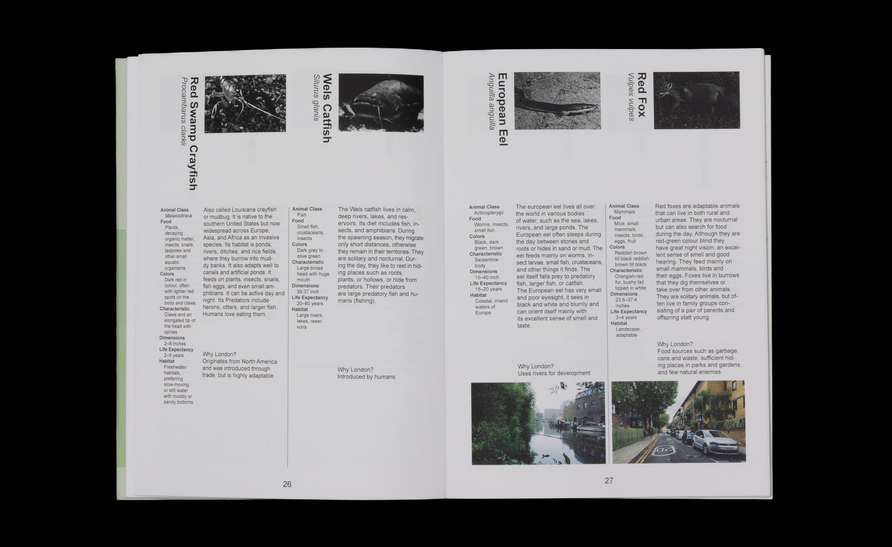
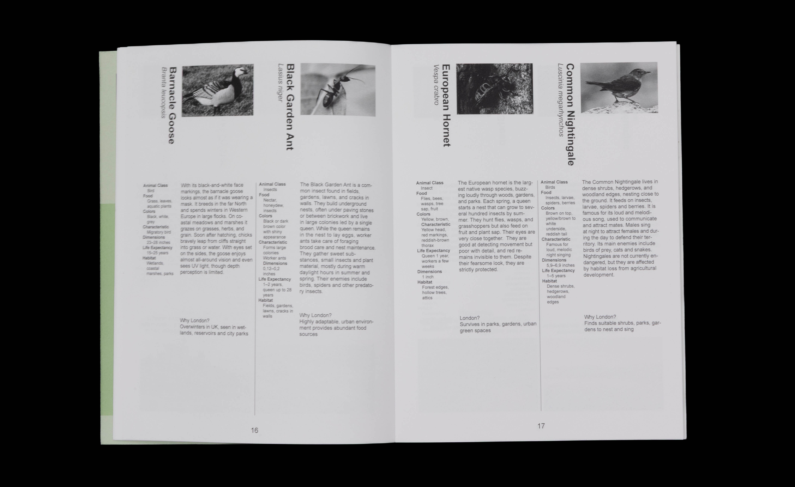
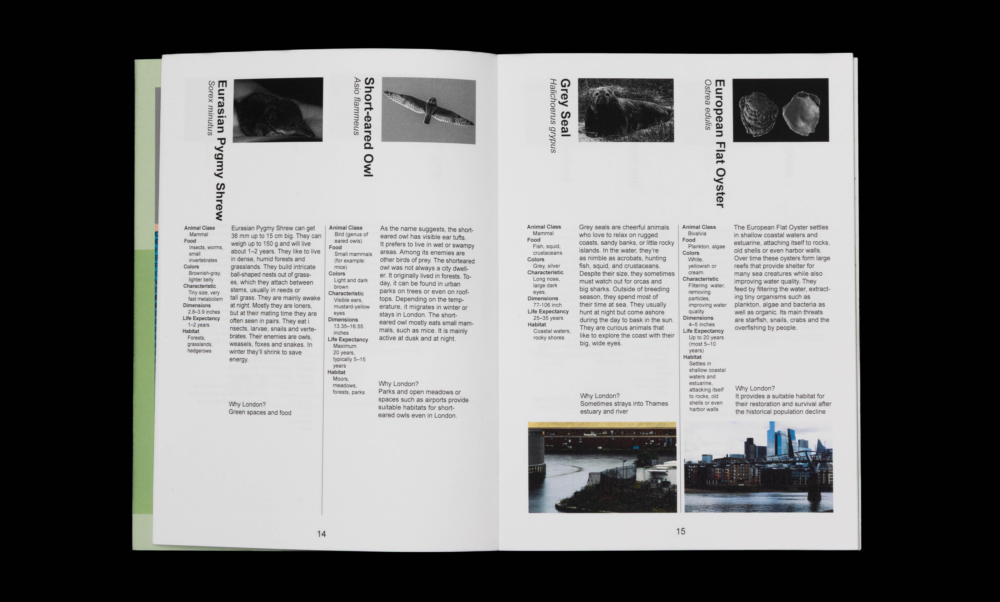
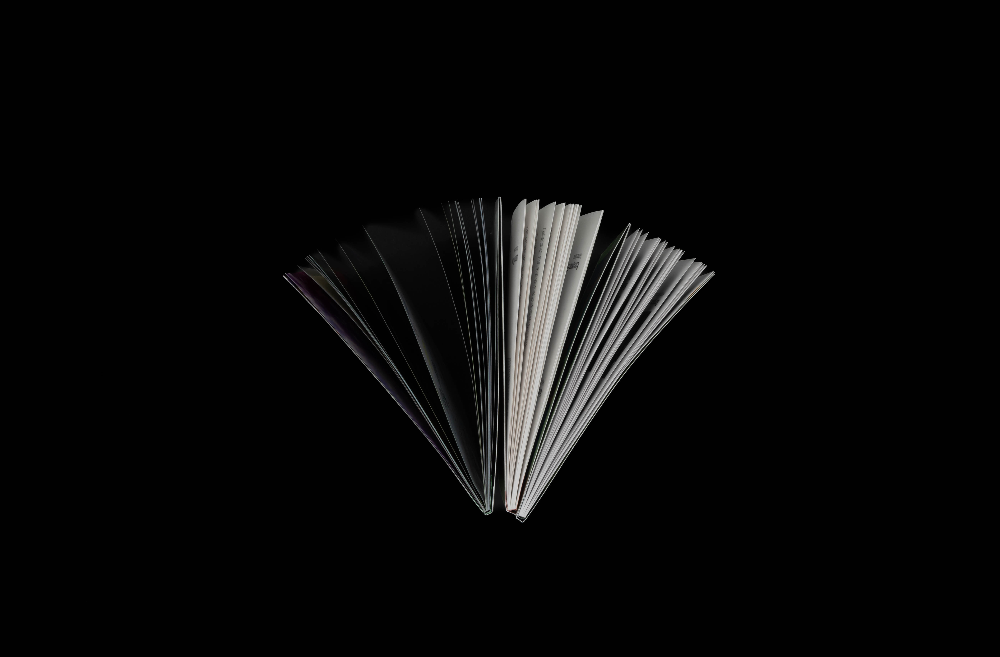
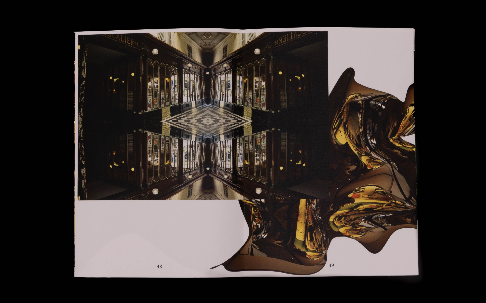
Wildnis in der Stadt
Zwischen dem dicht besiedelten Raum der Stadt, zwischen Straßen und Lichtern, bewegt sich eine verborgene Wildnis. Füchse, Vögel, Insekten, verborgen und doch immer da. Erst beim genauen Hinsehen zeigen sie sich, in Bewegungen, Spuren und Schatten. Der Blick richtet sich auf ihre Wege, ihre Wahrnehmung der Stadt. Aus dieser Annäherung entstand ein gemeinsamer Blick aus Beobachtungen und Elementen. Ein Blick genügt, um zu erkennen, dass mitten in der Stadt das Leben der Tiere unbemerkt weitergeht.